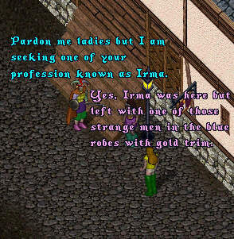
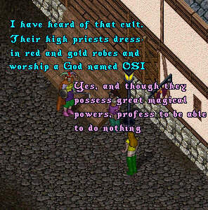
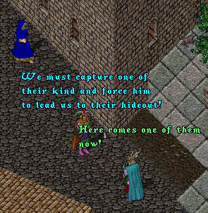
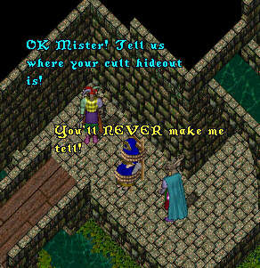
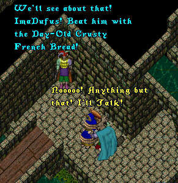
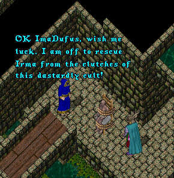

Episode 65: Desperately Seeking Irma (Part 1). This new saga takes off from where Episode 61 left us. For some background on how Ima and Irma got separated review episodes 55 to 61.
As this episode opens we find ImaNewbie in front
of the inn in Britain speaking with some ladies of
the evening about Irma's whereabouts.



Taking their blue robed captive down to a deserted
part of the Britain sewers, ImaNewbie and ImaDufus
begin to interrogate him.


Unable to withstand their merciless torture methods, the
blue robed individual gives up the whereabouts of the cult's
secret headquarters. ImaNewbie dons the blue robe as a disguise
and prepares to set off to infiltrate their organization.
